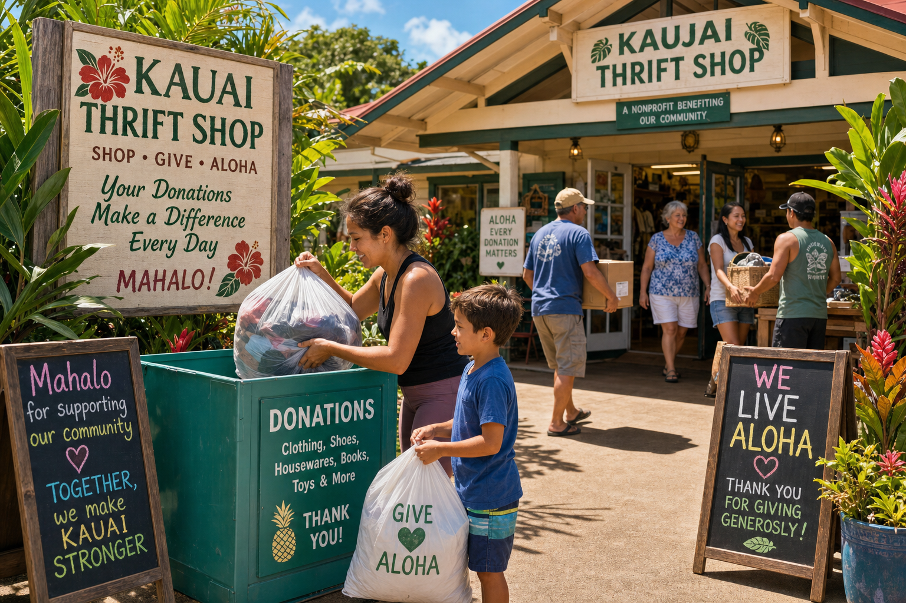

Donating to local thrift stores is one of the most direct ways to support sustainability and community on Kauai. When you donate well, your items find grateful new homes, support the store's community mission, and stay out of Kauai's landfill. Here's a guide to donating thoughtfully and effectively.
What Makes a Good Donation
The most valued donations are gently used, clean, and functional items that still have life in them. The key question to ask yourself is: "Would I give this to a friend?" If yes, it's a good donation. If the answer is "Well, they could fix it..." or "It just needs a wash..." — pause and reconsider. We genuinely appreciate every donation, but items that are broken, heavily stained, or moldy (a real issue in Hawaii's humidity) take time to process and dispose of.
Preparing Your Donation
Wash clothing and linens before donating. It shows care for the next person who will receive the item, and it helps our small team process donations more efficiently. For electronics, include power cords when possible and note any known issues. For furniture, wipe down surfaces and check that drawers and doors operate. For books, check for significant water or mold damage — Hawaii's humidity can damage books badly.
Scheduling a Drop-Off
Second Wave accepts walk-in donations during store hours (Monday–Saturday 10–6, Sunday 11–4). For large furniture donations or estate cleanouts, please call ahead or use our online form to schedule a pickup. We provide free furniture pickup for large estate donations within 10 miles of Hanapepe — this is one of our most valuable community services and we're grateful to our delivery volunteer team for making it possible.
Tax Deduction
Donations to Second Wave Thrift are tax-deductible. We issue receipts for all donations at the time of drop-off. For estate cleanouts and large donations, we can provide a detailed itemized receipt for tax purposes. Please request this when you arrive — we keep the forms on hand.
The Community Impact
Your donation doesn't just benefit the next shopper. A portion of Second Wave's proceeds goes to the Kauai Family Shelter, which supports families experiencing housing insecurity on the island. Twice a year we also hold free clothing events open to the community, where individuals can take what they need at no cost. When you donate to Second Wave, your items serve multiple layers of community need.